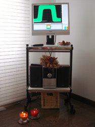
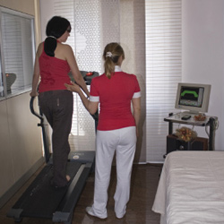

Le metodiche
Il centro Pelvic Gym si occupa della cura, prevenzione e trattamento
delle disfunzioni del pavimento pelvico attraverso la rieducazione e riabilitazione
pelvi-perineale con metodiche combinate: chinesiterapia, elettroterapia, biofeedback
e terapie manuali.
La rieducazione e riabilitazione del pavimento pelvico è un insieme di tecniche
il cui scopo è quello di migliorare il tono e la sensibilità dei muscoli
pelvi-perineali (zona compresa tra l’ano ed i genitali) di sostegno
alla vescica, all’utero e al retto-ano.
Si basa su tre metodiche:
La
chinesiterapia pelvi-perineale consiste nell’esecuzione
di esercizi ginnici del perineo denominati di
Kegel dal suo
inventore, pioniere della riabilitazione perineale.
Punto focale dell’allenamento è di sviluppare la consapevolezza del
proprio corpo (immagine corporea, propriocezione, respirazione e cinetesi).
Il programma si articola in più fasi:
- la fase preliminare dove si mette al corrente la persona
del protocollo personalizzato che si adotterà e degli obiettivi da raggiungere,
in quanto la terapia ginnica varia in base al problema riferito e alle difficoltà
che la persona incontrerà durante la terapia;
- presa di coscienza della zona perineale da trattare. Questa
fase è la più delicata in quanto da essa dipende il risultato terapeutico;
- raggiungimento di un buon grado di concentrazione
e rilassamento attraverso la respirazione, fondamentale
per l'esecuzione corretta degli esercizi pelvici;
- l'apprendimento dei concetti di contrazione
e rilasciamento dei muscoli interessati da svolgere in
posizioni sempre più impegnative ed in tempi di esecuzione differenti, senza il
coinvolgimento di altri muscoli che ne possono alterare o ritardare l'apprendimento
e quindi il risultato.
Pelvic Gym per facilitare la fase di presa di coscienza del perineo, in modo da
focalizzare istante per istante quali sono i movimenti che i muscoli perineali stanno
compiendo, utilizza approcci dedicati quali i feedback tattili e visivi.

Il biofeedback elettromiografico si ha utilizzando un'apparecchiatura
bio-medicale che va a monitorare sotto forma di grafico visivo e/o acustico, la
performances dei muscoli del pavimento pelvico interessati per migliorarne la forza
e la durata della contrazione e/o del rilasciamento. Tiene anche sotto controllo
altri distretti muscolari che partecipando all'esercizio ne possono alterare il
risultato ritardandone o impedendone la guarigione.
Oltre alla collaborazione del paziente che partecipa attivamente , occorrono anche
conoscenze e capacità dell'operatore, che deve saper valutare le differenze
anatomiche e fisiologiche delle diverse forme di incontinenza/stipsi ed i principi
su cui si basa il biofeedback , per correggere e far proseguire la persona durante
il suo training.
Il biofeedback manometrico, infine, viene usato in campo proctologico
in presenza di una alterazione della sensibilità rettale (assenza di stimolo all'evacuazione
o ipersensibilità all'arrivo del bolo fecale) con o senza debole contrazione dei
muscoli sfinteriali anali.

La riabilitazione volumetrica domiciliare come tecnica va a completare le procedure
riabilitative in caso di incontinenza fecale o stitichezza, ripristinando la percezione
del materiale fecale, la capacità del retto di accoglierlo e
trattenerlo e successivamente degli sfinteri anali di evacuarlo in condizioni ottimali.
Pelvic Gym ha integrato le tradizionali tecniche riabilitative
con un'esclusiva procedura: per simulare i reali movimenti svolti nell'arco della
giornata viene utilizzato un tapis roulant dove il paziente, in posizione ortostatica
e monitorato con un apparecchio bluetooth, riproduce le diverse posture che adotta
nella quotidianità in modo da individuare le problematiche specifiche e ricorrere
tempestivamente ad esercizi mirati.
Tutti gli esercizi vengono svolti in un ambiente in cui viene dato grande risalto
alla musicoterapica e all’aromaterapia, tecniche di comprovata efficacia per
ottenere “rilassamento” e per aumentare la sensazione di benessere psico-fisico.
L'
elettroterapia
viene eseguita con apparecchiature ambulatoriali dotate di elettrodi endocavitari
di ultima generazione, in grado di erogare delle correnti indolori. Ha come obiettivo
l'aumento della forza muscolare attraverso la stimolazione neuro-muscolare ed analgesico
in caso di dolore cronico pelvico.
L'efficacia dell'elettrostimolazione dipende da
numerosi fattori:
- l'impedenza (resistenza che incontra la corrente al passaggio attraverso il tessuto);
- la posizione degli elettrodi;
- i parametri dello stimolo elettrico (forma di corrente utilizzata, l'intensità,
durata dell'impulso e la frequenza);
- il tempo di stimolazione elettrica;
- il tempo di riposo (assenza di stimolazione).